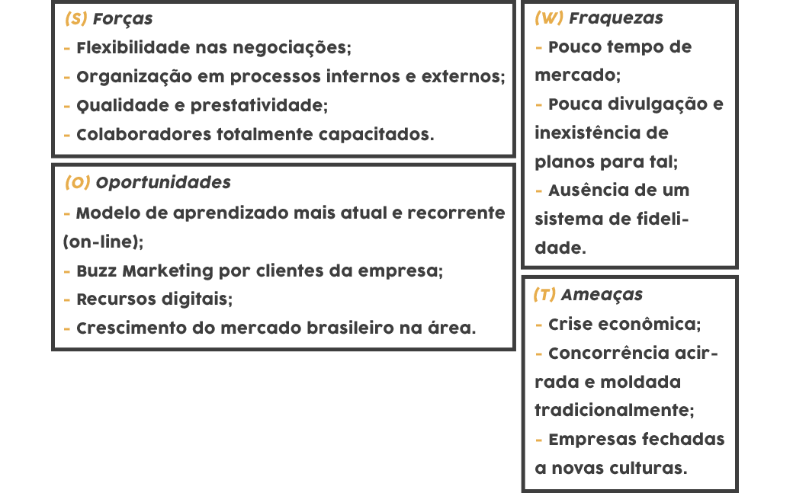

Buscamos oferecer treinamentos dinâmicos
e moldados conforme as exigências de seus clientes, com custo benefício acessível e qualidade garantida para atender todo o programa de necessidades.
Conheça-nos um pouco mais!
e moldados conforme as exigências de seus clientes, com custo benefício acessível e qualidade garantida para atender todo o programa de necessidades.

as organizações nas áreas de recursos humanos, patrimônio, materiais, informações, financeiro, tecnologica, entre outras. Implementar programas e projetos, elaborar planejamento organizacional, promover estudos de racionalização e controlam o desempenho organizacional; prestam consultoria administrativa à organização e pessoas.
Superior em Administração, Comunicação e Marketing;
• Inglês Intermediário;
• Conhecimento de ferramentas
• Indicadores de marketing.
Qualificação, Experiência como Aux. de Marketing e Conhecimento Básico.
“a matriz SWOT traça uma análise da situação atual do negócio e deve ser refeita regularmente, dependendo da velocidade com que seu ambiente, seu setor e sua própria empresa mudam.”

O objetivo deste treinamento se deu a partir da análise de atendimentos medíocres na hora da “venda”, levando em conta que o ramo no qual estamos tratando necessita de um diferencial, pois diversas faculdades podem oferecer os mesmos cursos, assim, é preciso que o cliente saia convencido de que “aqui” será a faculdade ideal para ele.
Com base nesse estudo e análise, podemos perceber a necessidade de um treinamento voltado para o relacionamento com o cliente, de forma que isso traga resultado para a organização e faça com que o cliente se sinta satisfeito e além disso, se sinta especial.
Notando que no atendimento, os colaboradores exercem várias funções ao mesmo tempo, é necessário que eles aprendam o poder de persuasão, pois assim saberá criar um canal de comunicação com o cliente sem que a ansiedade em realizar suas demais tarefas atrapalhe a negociação, pois isso às vezes leva a uma comunicação inadequada, fazendo com que o colaborador não atribua tal importância para isso.